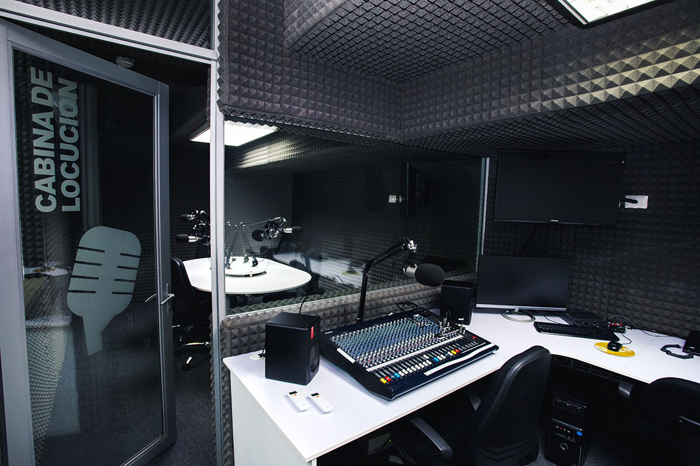

Иван Петров – звукорежисьор
Отговаря за планирането на записите, избора на микрофони и цялостния звук. Работил е с рок, поп и метъл групи, както и с подкаст формати.
MusicLab Studio е независимо музикално студио, което съчетава професионална техника и приятелска атмосфера. Създадохме го, защото вярваме, че качественият звук трябва да бъде достъпен и за независими изпълнители.
Работим с артисти от различни стилове – рок, поп, рап, джаз, електронна музика и подкасти. За нас всеки проект е различен, затова подхождаме индивидуално към идеите и нуждите на клиента.

Студиото започва като малка домашна стая за записи през 2020 г., но бързо прераства в професионално пространство с отделна контролна зала и вокална кабина.
Нашата мисия е проста: да помогнем на артистите да звучат така, както винаги са си представяли – без излишни усложнения и големи бюджети.
В това кратко видео можеш да видиш студиото отвътре – вокалната кабина, контролната зала и част от оборудването, с което работим всеки ден.
Отговаря за планирането на записите, избора на микрофони и цялостния звук. Работил е с рок, поп и метъл групи, както и с подкаст формати.
Помага на певците да се чувстват уверени пред микрофона – от загрявка и дишане до интерпретация и емоция в изпълнението.
Включва се в аранжименти, избор на звуци и структура на песента. Подкрепя артистите при подготовка на издаването – обложка, дистрибуция, промо.
MusicLab Studio си сътрудничи с местни клубове, фестивали, вокални школи и независими лейбъли. Част от нашите проекти са звучали по радио, онлайн платформи и на живо по сцени в страната.